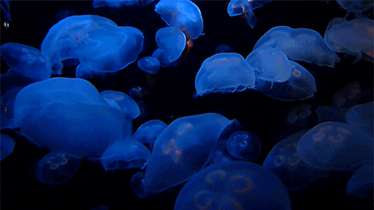
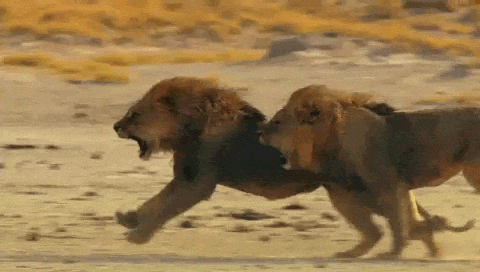
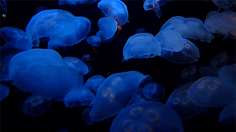
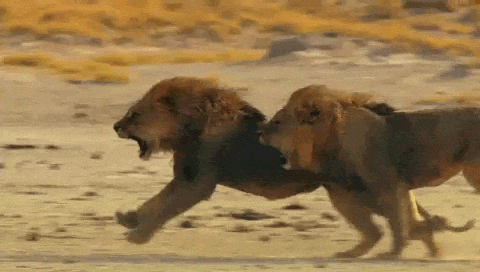
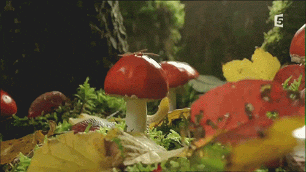
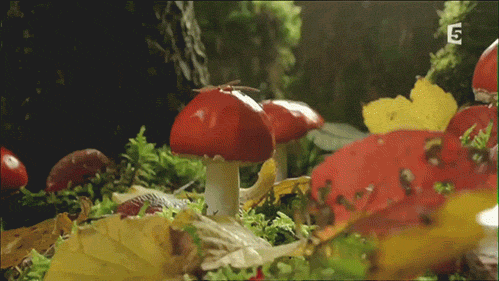

 

¿Que es Terra?
Informacion sobre todo tipo de vida, si es vegetal, acuatica, terrestre o del reino fungi. Tiene todo tipo de informacion acerca de ellos.
¿Para que se creo Terra?
Se creo para concientizar e informar a las personas sobre los distintos tipos de vida en el Planeta Tierra.